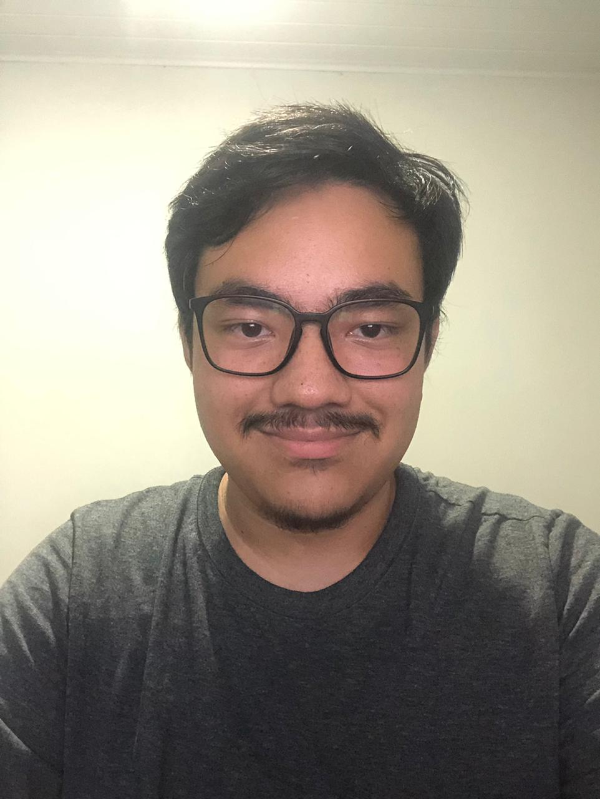

Gabriel Hideki de Almeida Yamamoto

Foto de Perfil
Resumo
Aluno do curso de Engenharia de Software da Universidade Tecnológica Federal do Paraná, Campus Cornélio Procópio (UTFPR-CP).
Principais áreas de interesse: Jogos, Dados, IA.
ODS que pretendo contribuir
 ODS 9
ODS 9
Habilidades
- Lógica de Programação
- Linguagem C
- Estruturas de Dados
- POO
- Resolução de Problemas
Educação
- Graduando em Engenharia de Software
- UTFPR-CP
- Início: 2024
- Previsão de conclusão: 2029
Hobbies
- Jogos online
- Assistir Séries e Filmes
Links Adicionais